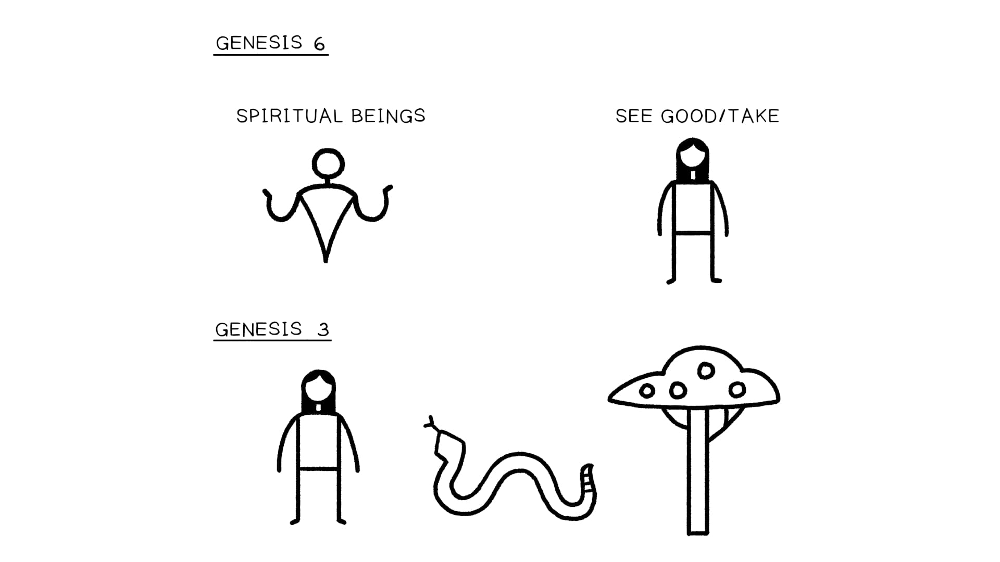

Design of Genesis 6:1-12
Key Takeaways
- The flood story begins by detailing the corruption of humanity and the land, outlining both a heavenly
- rebellion and an earthly rebellion as the source of this corruption. Genesis 6:1-12 uses repeated words and phrases from Genesis 1-3 to contrast God’s good creation
- against the now ruined land and to compare the rebellion of the humans with the rebellion of the sons
- of Elohim. The picture of God’s wrath in Genesis 6 is one of a brokenhearted God who hands creation over to the
- consequences of human and cosmic rebellion.
Cosmic Rebellion in the Time of Noah (Gen. 6:1-12)
The flood story begins with two aligned stories that focus on the corruption of “humanity” (האדם) in “the land”
(הארץ). This corruption comes from two sources, considered separately.
1. A heavenly rebellion that leads to an illicit union of spiritual and human beings, leading to the birth of
violent warriors. 2. An earthly rebellion of corrupt humans whose evil causes violence that defiles the land.
In both units, there is a narrative describing tragic evil (6:1-2 and 6:5) that leads to a divine speech about
Yahweh’s response (6:3 and 6:6-7).
Translation and Literary Design of Genesis 6:1-12
The Rebellion of the Sons of Elohim
1 And it came about, when humanity began to multiply (רב) on the face of the land , a
- and daughters were born to/for them , b
- 2 the sons of Elohim saw the daughters of humanity that they were good b'
- and they took wives for themselves, whomever they chose. c
- 3 and Yahweh said ,
- “My Spirit/breath will not dwell with humanity forever, a
- because he also is flesh; b
- and his days will be one hundred and twenty years.” a'
4 The Nephilim were in the land in those days, a
- and also afterward,
- when the sons of Elohim went b
- into the daughters of humanity c
- and they bore children c'
- to/for them ; b'
these are the mighty warriors who are from ancient time, men of the name. a'
The Rebellion of the Sons of Adam
5 And Yahweh saw that multiplied (רב) was the badness of humanity in the land , a
- and every purpose of the plans of his heart was only bad all the day, b
6 and Yahweh regretted that he made humanity in the land . a'
- And he was pained in his heart. b'
- 7 And Yahweh said ,
- “I will wipe away humanity that I created from the face of the ground ,
- from humanity
- to animals
- to creeping things and to birds of the skies
- for I regret that I have made them."
8 And/But Noah found favor in the eyes of Yahweh.
- 9 These are the birth -generations of Noah; a
- Noah was a righteous one,
- blameless in his generation; b
- Noah walked with Elohim;
- 10 and Noah birthed three sons: Shem, Ham, and Japheth. a
11 And the land was ruined before Elohim. a
- And the land was filled with violence, b
12 and Elohim saw the land : and behold, it was ruined , a'
- for all flesh had ruined its/his way upon the land . b'
| Genesis 6:1-12. Translation and Literary Design by Tim Mackie for BibleProject Classroom: Noah to Abraham (2020). Genesis 6:1-12 and Genesis 3 Both units of 6:1-4 and 6:5-12 contain coordinated hyperlinks back to the original creation blessing bestowed on humanity (Gen. 1:1-2:3) and to the tragic forfeit of that blessing in Genesis 3:6. The behavior of the sons of God mirrors the behavior of Eve in Genesis 3, while the “seeing” of Yahweh in Genesis 1 sadly contrasts what he sees in Genesis 6. | |
|---|---|
| Genesis 1:1-2:3 - Good Multiplied " And God saw that it was good ” [7x] “And God blessed them, 'Be fruitful and multiply (הבר), fill the land (אלמ + ץרא).'” | |
| Genesis 3:6 - First Fail Narrative And the woman saw (האר) that the tree was good (בוט יכ) for eating and that it was enticing to the eyes and it was desirable for gaining wisdom, and she took (חקל) its fruit and she ate and she gave to her husband with her and he ate. | |
| Genesis 6:1-2 - Capstone Fail Narrative And it came about when humanity began to multiply (הבר) on the face of the land (ץרא) … and the sons of God saw (ואריו) , the daughters of humanity (םדאה תונב) that they were good (בוט יכ), , and they took (חקל) for themselves wives from all which they chose. | |
| Genesis 6:5 & 6:11 - Evil Multiplied " And Yahweh saw (אריו) that (יכ) multiplied (הבר) was the evil of humanity (תער םדאה) in the land (ץרא). "And the land (ץרא) was ruined before God, and the land was filled (ץרא + אלמ) with violence." | |
| Mirrored Phrases in Genesis 1, 3, and 6. Created by Tim Mackie for BibleProject Classroom: Noah to Abraham (2020). | |
| The twin introductions to the flood narrative consist of two literary units, 6:1-4 and 6:5-8, both carefully shaped to coordinate with each other in a narrative analogy. Genesis 6:1-4: Humanity’s multiplication leads to rebel spiritual beings seeing and taking human women. Genesis 6:5-8: Yahweh sees that, as a result of 6:1-4, evil and violence have multiplied in the land. Both of these analogies depend on the narrative analogy in Genesis 1-3. When we recognize this, the analogies deepen. |
Genesis 1 is designed to answer these core questions. We are going to tackle these questions in three large steps.
1. The sons of God and daughters of men / Eve and the snake 2. The daughters of men / The tree of knowing good and bad
3. The blessing and multiplication of humans on the land in Genesis 1 is sadly turned into a multiplication
- of death in Genesis 6

Genesis 6 Mirrors Genesis 3. Illustration created by Tim Mackie for BibleProject Classroom: Noah to Abraham
- (2020).
Recommended Resource
For a helpful theory of worldview statements, we recommend J. Richard Middleton and Brian Walsh’s book,
Truth is Stranger Than It Used to Be: Biblical Faith in a Postmodern Age.
Reflection Question
What observations did you have as we read through Genesis 6:1-12?